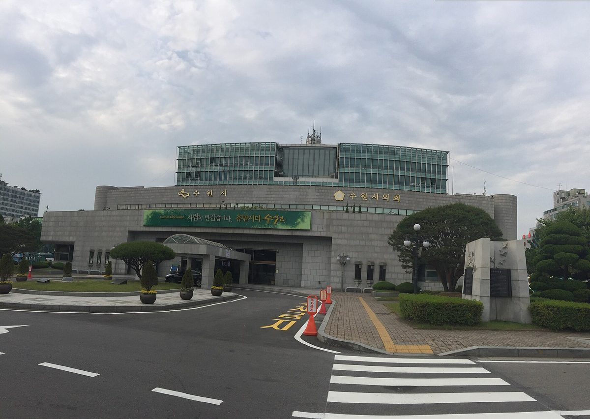

수원도시공사의 시민햇빛발전 특수목적법인 출자 동의안, 시의회 상임위 통과…28일 본회의 의결 예정

환경안전위 22일 원안가결, 출자 금액·지분율은 공개 안 돼…수원시는 4월 협약 때 공영주차장·공공 유휴부지 20MW 이상 태양광과 시민 투자자 우선 배당 방식 제시
수원도시공사가 시민햇빛발전 특수목적법인 '수원햇빛발전㈜'에 출자하는 내용의 동의안이 수원특례시의회 상임위원회를 통과했다. 시의회 환경안전위원회는 22일 제405회 제1차 정례회 기간 중 회의를 열어 조례안 7건과 동의안 3건 등 10건을 심사했고, 이 출자 동의안을 비롯한 동의안 3건을 모두 원안대로 가결했다. 심사를 마친 안건은 회기 마지막 날인 28일 제2차 본회의에서 최종 의결될 예정이며, 공개된 심사 결과에는 도시공사의 출자 금액과 지분율이 나오지 않았다. 앞서 수원시는 4월 20일 수원도시공사, 수원시민햇빛발전 사회적협동조합 등 지역 에너지협동조합 3곳, 수원상공회의소, 수원산업단지관리공단, IBK기업은행 동수원지점과 '수원햇빛발전소' 건설·활성화 업무협약을 맺고, 공영주차장과 공공 유휴부지에 발전 용량 20MW 이상의 태양광발전소를 짓겠다는 계획을 내놓았다. 당시 수원시는 발전 수익을 시민 투자자에게 먼저 배당하는 '시민우선배당' 방식을 전국에서 처음 도입한다고 설명했다. 김경례 환경안전위원장은 조례와 동의안이 시민의 일상과 지역의 안전, 생활환경에 직접 영향을 주는 만큼 꼼꼼한 검토가 중요하다고 말했다.
시민에너지 관점
시 공사가 법인에 출자하고 시민 협동조합과 지역 기업이 함께 공영주차장 지붕 위에 발전소를 세우는 구조는, 공공 부지를 시민의 자산으로 바꾸는 지자체 모델로 눈여겨볼 만하다. 독일 헤센주 볼프하겐에서는 2012년 주민 에너지협동조합이 시 에너지 공기업 지분 25%를 사들여, 시민이 배당을 받는 투자자를 넘어 공기업의 공동 주인이 됐다. 공사가 앞장서면 시민은 결국 배당만 받는 소액 투자자에 머물 것이라는 우려가 나올 수 있는 만큼, 법인 지분과 의결권 가운데 시민과 협동조합 몫이 얼마인지가 이 사업이 시민 발전소인지를 가르는 기준이 된다. 28일 본회의에 앞서 시의회는 출자 규모와 지분 구조, 시민 몫의 비율부터 시민에게 공개하도록 요구해야 한다.
출처: 환경일보 2026-10-25 강세근 원문 보기
水原都市公社の市民太陽光発電特別目的法人への出資同意案、市議会常任委を通過…28日の本会議で議決予定
環境安全委が22日に原案可決、出資額・持分比率は公表されず…水原市は4月の協約で公営駐車場・公共遊休地での20MW以上の太陽光と市民投資家への優先配当方式を提示
水原都市公社が市民太陽光発電の特別目的法人「水原ヘッピッ発電（株）」に出資する内容の同意案が、水原特例市議会の常任委員会を通過した。市議会の環境安全委員会は22日、第405回第1次定例会の会期中に会議を開き、条例案7件と同意案3件の計10件を審査し、この出資同意案を含む同意案3件をすべて原案どおり可決した。審査を終えた案件は会期最終日の28日に開かれる第2次本会議で最終議決される予定で、公表された審査結果には都市公社の出資額と持分比率は示されていない。水原市はこれに先立つ4月20日、水原都市公社、水原市民ヘッピッ発電社会的協同組合など地域のエネルギー協同組合3団体、水原商工会議所、水原産業団地管理公団、IBK企業銀行東水原支店と「水原ヘッピッ発電所」の建設・活性化に関する業務協約を結び、公営駐車場や公共の遊休地に発電容量20MW以上の太陽光発電所を建設する計画を打ち出した。当時、水原市は発電収益を市民投資家に先に配当する「市民優先配当」方式を全国で初めて導入すると説明した。キム・ギョンレ環境安全委員長は、条例や同意案は市民の日常と地域の安全、生活環境に直接影響するため、綿密な検討が重要だと述べた。
市民エネルギーの視点
市の公社が法人に出資し、市民協同組合や地域企業とともに公営駐車場の上に発電所を建てる仕組みは、公共の土地を市民の資産に変える自治体モデルとして注目に値する。ドイツ・ヘッセン州のヴォルフハーゲンでは2012年、住民のエネルギー協同組合が市のエネルギー公営企業の持分25%を買い取り、市民は配当を受ける投資家を超えて公営企業の共同所有者となった。公社が主導すれば市民は結局配当を受けるだけの小口投資家にとどまるとの懸念も出かねないだけに、法人の持分と議決権のうち市民と協同組合の割合がどれだけかが、この事業が市民の発電所かどうかを分ける基準になる。28日の本会議を前に、市議会は出資規模と持分構造、市民の持分比率をまず市民に公開するよう求めるべきだ。
出典: 環境日報（Hwankyung Ilbo） 2026-10-25 カン・セグン 原文を読む
水原都市公社向市民阳光发电特殊目的法人出资的同意案通过市议会常任委员会…预计28日全体会议表决
环境安全委员会22日原案通过，出资金额与持股比例未公开…水原市在4月协议中提出在公营停车场和公共闲置用地建设20MW以上太阳能及向市民投资者优先分红的方式
关于水原都市公社向市民阳光发电特殊目的法人“水原阳光发电（株）”出资的同意案，已在水原特例市议会常任委员会获得通过。市议会环境安全委员会于22日第405届第1次定期会议期间召开会议，审议了条例案7件、同意案3件等共10件议案，包括这项出资同意案在内的3件同意案均按原案通过。审议完毕的议案预计将在会期最后一天28日召开的第2次全体会议上进行最终表决，公开的审议结果中没有列出都市公社的出资金额和持股比例。此前，水原市于4月20日与水原都市公社、水原市民阳光发电社会合作社等3家地方能源合作社、水原商工会议所、水原产业园区管理公团以及IBK企业银行东水原支行签署“水原阳光发电站”建设与活化业务协议，并提出在公营停车场和公共闲置用地建设发电容量20MW以上太阳能电站的计划。水原市当时表示，将在全国首次引入把发电收益优先分配给市民投资者的“市民优先分红”方式。环境安全委员长Kim Gyeong-rye表示，条例和同意案直接影响市民日常生活、地区安全和生活环境，因此细致审查十分重要。
市民能源视角
由市属公社向法人出资，与市民合作社和地方企业一起在公营停车场上建设电站，这一结构作为把公共用地转化为市民资产的地方政府模式值得关注。在德国黑森州的沃尔夫哈根，居民能源合作社于2012年买下市属能源公营企业25%的股份，使市民不只是领取分红的投资者，而成为公营企业的共同所有者。外界可能担心由公社主导，市民最终只会停留在仅领取分红的小额投资者位置，因此法人股份和表决权中市民与合作社占多少，将成为判断这项事业是否真正属于市民电站的标准。在28日全体会议之前，市议会应要求首先向市民公开出资规模、股权结构和市民所占比例。
来源: Hwankyung Ilbo 2026-10-25 Kang Se-geun 查看原文
Suwon council committee approves city corporation's investment in citizen solar special-purpose company, with plenary vote due on the 28th
Environment and Safety Committee passed the bill unamended on the 22nd, with no investment amount or stake disclosed; in April the city outlined 20MW-plus of solar on public car parks and idle public land and a dividend scheme that pays citizen investors first
A bill allowing Suwon Urban Corporation to invest in Suwon Haetbit Power Co., a special-purpose company for citizen solar power, has passed a standing committee of the Suwon Special City Council. The council's Environment and Safety Committee met on the 22nd during its 405th first regular session to review 10 items, seven ordinances and three consent bills, and passed all three consent bills, including the investment bill, without amendment. The items will go to a final vote at the second plenary session on the 28th, the last day of the session, and the published committee results did not state how much the corporation will invest or what stake it will hold. On April 20, the city had signed an agreement to build and expand the Suwon Haetbit power plants with Suwon Urban Corporation, three local energy cooperatives including the Suwon Citizens' Sunlight Power Social Cooperative, the Suwon Chamber of Commerce, the Suwon Industrial Complex Management Corporation and IBK Industrial Bank's East Suwon branch, setting out a plan for at least 20MW of solar on public car parks and idle public land. The city said at the time that it would be the first in Korea to adopt a citizen-priority dividend scheme that pays generation income to citizen investors first. Committee chair Kim Gyeong-rye said careful review matters because ordinances and consent bills directly affect citizens' daily lives, local safety and living conditions.
Citizen Energy View
A structure in which a city-owned corporation invests in a company that builds solar over public car parks together with citizen cooperatives and local businesses deserves attention as a municipal model for turning public land into citizens' assets. In Wolfhagen in the German state of Hesse, a residents' energy cooperative bought a 25% stake in the town's municipal energy utility in 2012, making citizens co-owners of the utility rather than just investors collecting dividends. Because there may be concern that a corporation-led project will leave citizens as small investors who only receive dividends, the share of equity and voting rights held by citizens and cooperatives will be the test of whether this is truly a citizens' power plant. Before the plenary vote on the 28th, the council should require that the investment size, ownership structure and citizens' share be disclosed to the public first.
Source: Hwankyung Ilbo 2026-10-25 Kang Se-geun Read the original